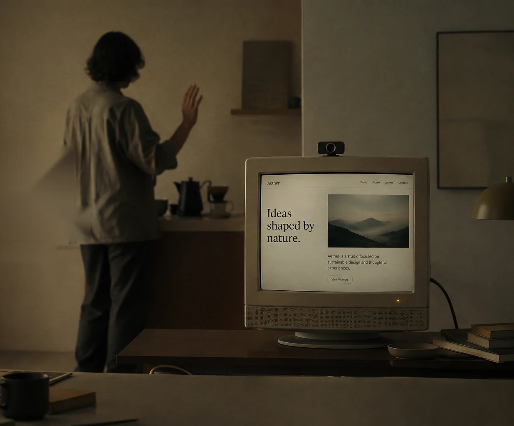

01 / 05 · Prep
Warm the dripper
Rinse the paper filter and heat the server.
00:00ready
Navigate, scroll, and interact with natural gestures.
Your hands are free for what matters.

NoTouchWeb turns your camera into a quiet layer of control. A small gesture moves the page, advances the slide, or selects what you need—then technology steps back again.
Move through recipes and timers while your hands stay clean and busy.
Advance slides and demos while staying with the people in the room.
Create touch-free kiosks and installations with no specialized hardware.
The demo uses motion locally in your browser. Nothing is uploaded, recorded, or stored.
NoTouchWeb is designed to process interaction locally. Your video is never sent to a server.